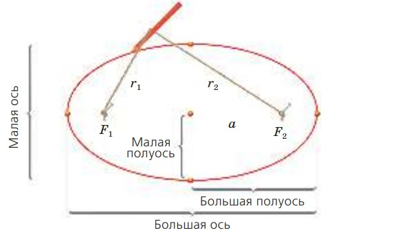
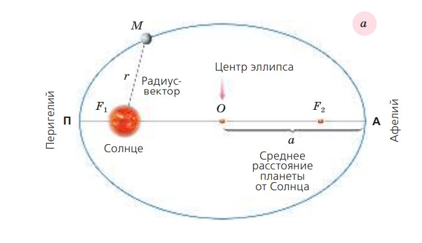

Изучая движение планеты Марс по наблюдениям Тихо Браге и используя расчёты Коперника, Кеплер сначала изобразил орбиты Земли и Марса окружностями с радиусами 1 и 1,52 а. е. Чтобы объяснить неравномерное движение Солнца по эклиптике, Кеплер сместил его из центра земной орбиты на 1/59 (0,017) его радиуса. Но многочисленные попытки изобразить орбиту Марса окружностью с центром в Солнце или вне его окончились неудачей: вычисленные положения планеты на небе не совпадали с наблюдаемыми. Тогда Кеплер отверг многовековое убеждение в круговом равномерном движении планет и стал подбирать для Марса более подходящую форму орбиты. Лучше других подошёл эллипс с Солнцем в одном из фокусов и эксцентриситетом e = 0,091.
Следовательно, принятое Кеплером положение Солнца вне центра круговой орбиты Земли означало, что Земля тоже движется по эллиптической орбите с небольшим эксцентриситетом e = 0,017 и её движение, как и движение Марса, неравномерно.В 1616 г. Кеплер сформулировал свой первый закон: орбита каждой планеты есть эллипс, в одном из фокусов которого находится Солнце. Следовательно, орбиты всех планет Солнечной системы имеют один общий фокус, расположенный в центре Солнца. На рисунке а изображена орбита планеты М в виде эллипса с Солнцем в одном из фокусов F1 . Центр эллипса находится в точке О, большая ось АП = 2a, полуось АО = = ОП = a.
Ближайшую к Солнцу точку П орбиты называют перигелием, а наиболее удалённую точку А — афелием. При движении планеты М вокруг Солнца её гелиоцентрическое расстояние (расстояние от Солнца) равно модулю радиус-вектора: r = F1M. Перигельное расстояние q = a(1 – e), афельное расстояние Q = a(1 + e). Первому закону Кеплера подчиняются также движения комет и астероидов. В дальнейшем И. Ньютон, используя открытый им закон всемирного тяготения, дал более общую формулировку рассматриваемого нами закона.